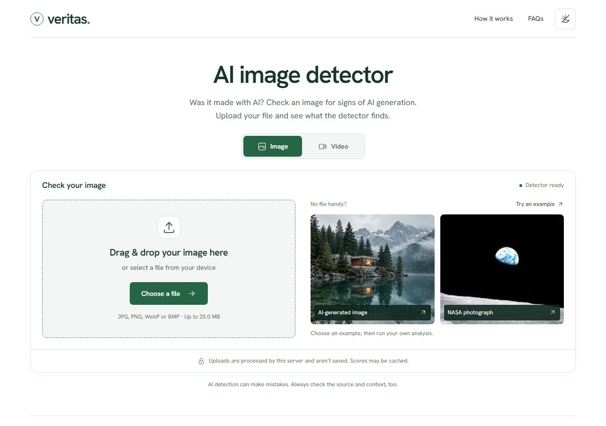

Upload an image or video. Take a closer look.
Three public examples. Real model responses.

NASA’s Earthrise photograph, taken in 1968.
AI class score in this example.
Open the details to see the model behind the result.
This landscape was generated for the demo.
AI class score in this example.
A score does not prove how a file was made.
Four frames. Each has its own score.
Average AI class score.
This MP4 uses the generated still image. Motion and audio are not analyzed.
Run Veritas locally or host your own instance.